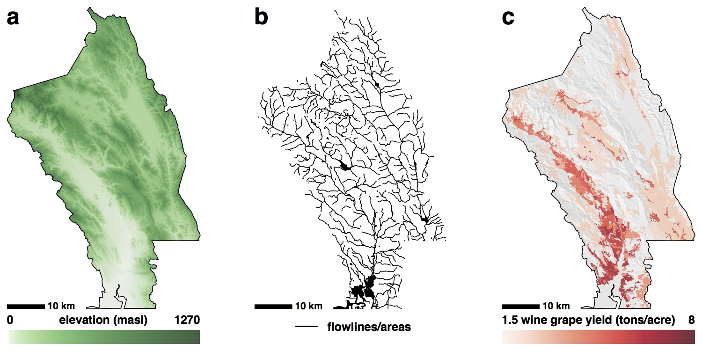

#### software *** ##### <a href="https://github.com/bocinsky/FedData" target="_blank">FedData</a> - federated data sources in *R* Functions to automate downloading geospatial data available from several federated data sources (mainly sources maintained by the US Federal government). Designed with the large-scale geographic information system (GIS) use-case in mind: cases where the use of dynamic web-services is impractical due to the scale (spatial and/or temporal) of analysis. A <a href="http://www.envirecon.org" target="_blank">SKOPE</a> project.  *** ##### <a href="https://github.com/bocinsky/PaleoCAR" target="_blank">PaleoCAR</a> - high-resolution paleoclimate reconstruction in *R* Correlation-adjusted regression of tree-ring series on spatio-temporal climate signals. PaleoCAR builds reconstructions for any arbitrarily defined rectangular area by assembling and weighting (via [CAR regression](http://www.degruyter.com/view/j/sagmb.2011.10.issue-1/sagmb.2011.10.1.1730/sagmb.2011.10.1.1730.xml)) the combination of climate proxies from publicly accessible databases that best reconstructs weather records from the historic period. A <a href="http://village.anth.wsu.edu" target="_blank">VEP</a> project. Published in <a href="http://www.nature.com/ncomms/2014/141204/ncomms6618/full/ncomms6618.html" target="_blank">*Nature Communications*</a>. <img src="./media/GROWING_NICHE_1247_UNION.jpg" width="800px" title="PaleoCAR reconstruction of the rain-fed maize agricultural niche in AD 1247. The upper panels represent a study area in southwestern Colorado; the lower panels represent an area in the northern Rio Grande region of New Mexico. Each panel's color gradient breaks at the extent of that signal's agricultural niche. Thin black lines represent prediction intervals. Scale bar: 10 km. (a,b) net water-year precipitation, green portion in niche. (e,f) growing-season GDDs, red portion in niche. (c,d) the rain-fed maize agricultural niche, light green portion in upper PI, medium green portion in niche, dark green portion in lower PI.">